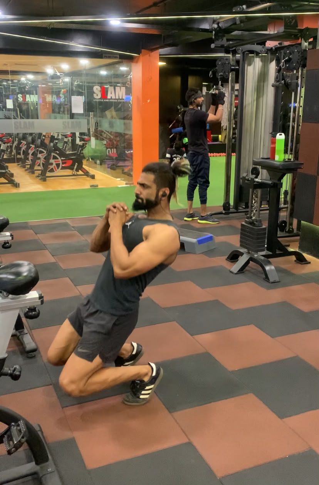

“
As an actor, model, and fitness professional myself, my body is my career, and my standards for training are incredibly high. Even with my background, I deeply value Praveen's advanced insights, precision programming, and fitness philosophy. When I needed to get into peak condition for an upcoming movie role, Praveen was the only coach I trusted to take my physique to the next level. Their ability to fine-tune elite training protocols is unmatched. Whether you are a beginner or a seasoned pro looking for an edge, Praveen delivers world-class results.
Ajay
39 · Actor